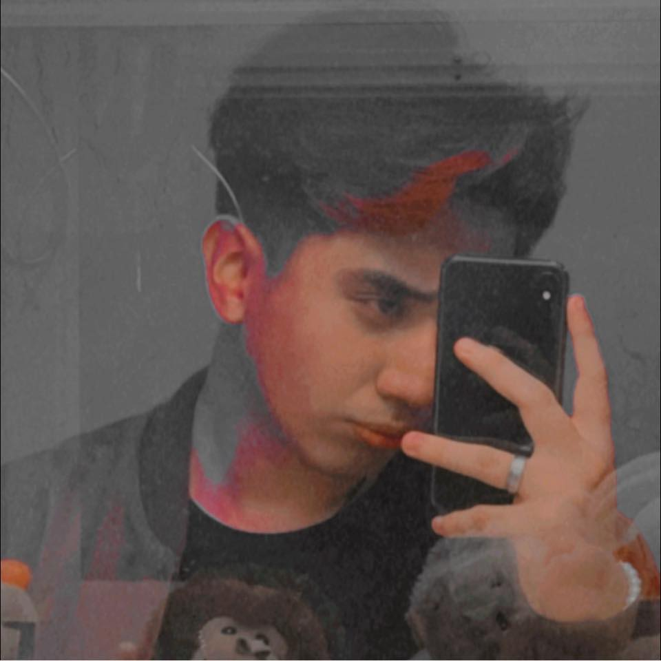
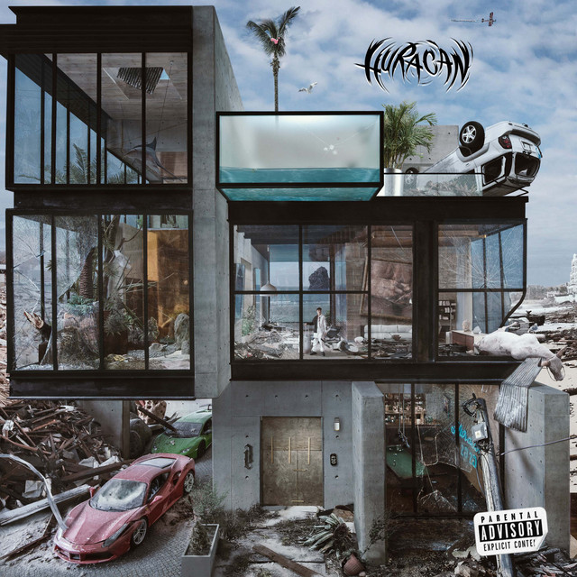

Soy Luu
Mi nombre es Luis Armando Contreras Ramos pero me conocen como Luu.
Soy fotógrafo amateur y futuro mercadólogo, un dia mi sueño fue ser UI/UX Designer y esta es una prueba de lo que había aprendido.
Mis artistas favoritos son Bad Bunny, Rels B , The Weeknd y Joji.
Mis canciones favoritas de ellos son:

Moscow Mule
Bad Bunny

Mírame Ma
Rels B

Die For You
The Weeknd

Glimpse of Us
Joji